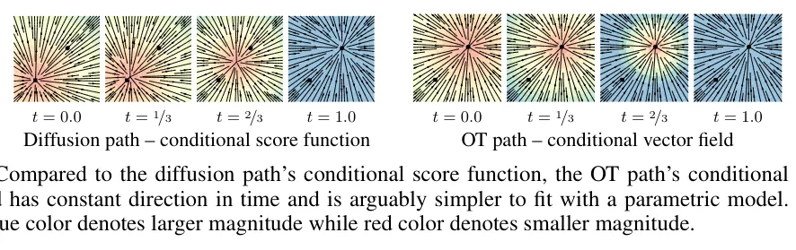
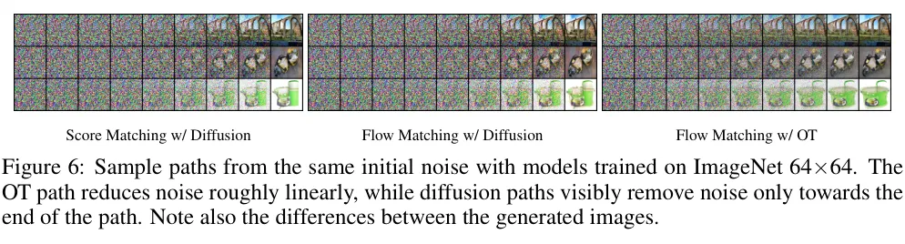
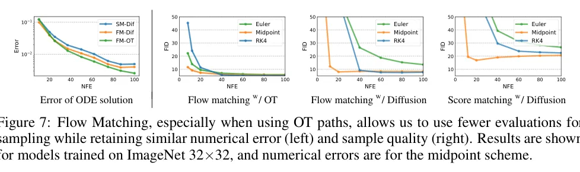
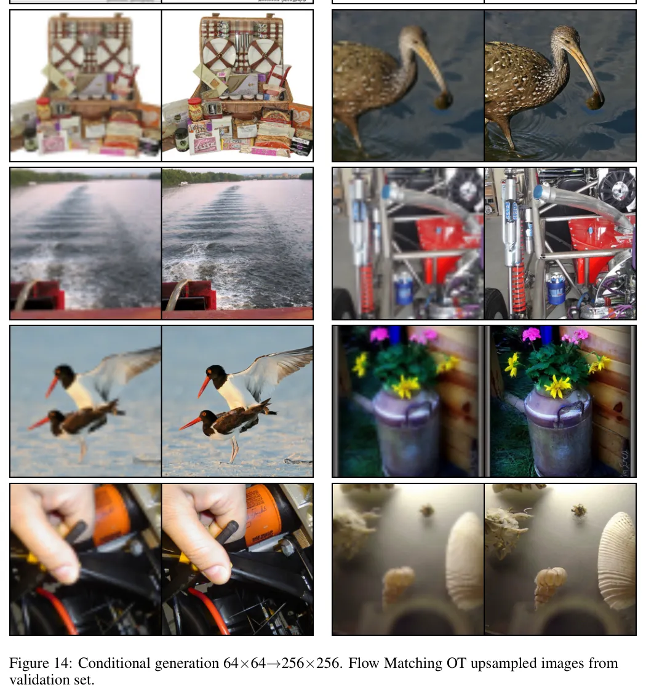

We introduce a new paradigm for generative modeling built on Continuous Normalizing Flows (CNFs), allowing us to train CNFs at unprecedented scale. Specifically, we present the notion of Flow Matching (FM), a simulation-free approach for training CNFs based on regressing vector fields of fixed conditional probability paths. Flow Matching is compatible with a general family of Gaussian probability paths for transforming between noise and data samples—which subsumes existing diffusion paths as specific instances. Interestingly, we find that employing FM with diffusion paths results in a more robust and stable alternative for training diffusion models. Furthermore, Flow Matching opens the door to training CNFs with other, non-diffusion probability paths. An instance of particular interest is using Optimal Transport (OT) displacement interpolation to define the conditional probability paths. These paths are more efficient than diffusion paths, provide faster training and sampling, and result in better generalization. Training CNFs using Flow Matching on ImageNet leads to consistently better performance than alternative diffusion-based methods in terms of both likelihood and sample quality, and allows fast and reliable sample generation using off-the-shelf numerical ODE solvers.
📝 精读笔记（要点）
为什么读它（与精读链路的关联）
精读 World Engine 的 DiT 时讨论到 diffusion vs flow matching——这篇就是 flow matching 的理论奠基作（Lipman 2022）。它把"学速度场、解 ODE 从噪声到数据"讲清楚，并说明为什么它统一并超越扩散（扩散是其特例）。SD3 / Flux 的 rectified flow 都建在它之上。
① Flow Matching：无需仿真地训练 CNF（回归条件概率路径的向量场），解决了 CNF 过去"训练要解 ODE、太贵"的痛点。 ② 统一扩散：FM 兼容一大类高斯概率路径，现有扩散路径是其特例；用 FM 训扩散更稳。 ③ OT 路径：用最优传输位移插值定义的"直线"路径，比扩散路径更高效、训练采样更快、泛化更好。
关键结果
ImageNet 上，FM（尤其 OT 路径）在似然 + 样本质量上持续优于扩散类方法；采样用现成数值 ODE 求解器即可，快且可靠。
和 diffusion 的关系（一句话）
diffusion 是 FM 的特例（高斯/扩散路径）；FM 是更一般的框架，能选更直的 OT 路径 → 更少积分步、更快采样。这就是"rectified flow / 直路径"高效的根。
We introduce a new paradigm for generative modeling built on Continuous Normalizing Flows (CNFs), allowing us to train CNFs at unprecedented scale. Specifically, we present the notion of Flow Matching (FM), a simulation-free approach for training CNFs based on regressing vector fields of fixed conditional probability paths.
Flow Matching is compatible with a general family of Gaussian probability paths for transforming between noise and data samples—which subsumes existing diffusion paths as specific instances. Interestingly, we find that employing FM with diffusion paths results in a more robust and stable alternative for training diffusion models.
FM 兼容一大类用于"在噪声与数据之间变换"的高斯概率路径——现有的扩散路径只是其中的特例。有趣的是，我们发现用 FM 配合扩散路径，能得到比原扩散训练更稳健、更稳定的替代方案。
Furthermore, Flow Matching opens the door to training CNFs with other, non-diffusion probability paths. An instance of particular interest is using Optimal Transport (OT) displacement interpolation to define the conditional probability paths. These paths are more efficient than diffusion paths, provide faster training and sampling, and result in better generalization.
Training CNFs using Flow Matching on ImageNet leads to consistently better performance than alternative diffusion-based methods in terms of both likelihood and sample quality, and allows fast and reliable sample generation using off-the-shelf numerical ODE solvers.
在 ImageNet 上用 FM 训练 CNF，在似然和样本质量上都持续优于扩散类方法，并能用现成的数值 ODE 求解器快速、可靠地采样。
一句话抓 Abstract：FM = 无需仿真地回归"条件概率路径的向量场"来训 CNF；扩散是其特例；用 OT 直线路径更快更好；采样只需现成 ODE 求解器。
对照之前讨论：diffusion 是 FM 在"高斯/扩散路径"下的特例；FM 把它推广到任意条件路径，OT 直线路径 → 少步 ODE 采样。consistency model 是另一条"压步数"的路（学直达终点的映射），FM/OT 是"把路径本身拉直"。两者都服务"扩散太慢"这个痛点，但手段不同（拉直路径 vs 学捷径映射）。
We explore the empirical benefits of using Flow Matching on the image datasets of CIFAR-10 and ImageNet at resolutions 32, 64, and 128. We also ablate the choice of diffusion path in Flow Matching, particularly between the standard variance preserving diffusion path and the optimal transport path. Unless otherwise specified, we evaluate likelihood and samples from the model using dopri5 at absolute and relative tolerances of 1e-5.
For ImageNet-128 Dhariwal & Nichol (2021) train for 4.36m iterations with batch size 256, while FM (with 25% larger model) used 500k iterations with batch size 1.5k, i.e., 33% less image throughput.
We introduced Flow Matching, a new simulation-free framework for training Continuous Normalizing Flow models, relying on conditional constructions to effortlessly scale to very high dimensions. Furthermore, the FM framework provides an alternative view on diffusion models, and suggests forsaking the stochastic/diffusion construction in favor of more directly specifying the probability path.
FM 是训练 CNF 的免仿真新框架，靠"条件构造"轻松 scale 到极高维；它给扩散模型一个新视角——放弃随机/扩散式构造，转而直接指定概率路径，从而能构造采样更快、生成更好的路径。
对照 Figure 2：这就是网络要回归的目标场。左=扩散路径的条件 score（方向随 t 改变），右=OT 路径的条件向量场——方向在时间上恒定，所以回归任务更简单、更好拟合（原文：constant direction in time and is arguably simpler to fit）。蓝=幅值大、红=幅值小。

Figure 2: Compared to the diffusion path's conditional score function, the OT path's conditional vector field has constant direction in time and is arguably simpler to fit with a parametric model. Note the blue color denotes larger magnitude while red color denotes smaller magnitude.
Figure 4: (left) Trajectories of CNFs trained with different objectives on 2D checkerboard data. The OT path introduces the checkerboard pattern much earlier, while FM results in more stable training. (right) FM with OT results in more efficient sampling, solved using the midpoint scheme.
Figure 1: Unconditional ImageNet-128 samples of a CNF trained using Flow Matching with Optimal Transport probability paths.

Figure 6: Sample paths from the same initial noise with models trained on ImageNet 64×64. The OT path reduces noise roughly linearly, while diffusion paths visibly remove noise only towards the end of the path. Note also the differences between the generated images.

Figure 7: Flow Matching, especially when using OT paths, allows us to use fewer evaluations for sampling while retaining similar numerical error (left) and sample quality (right). Results are shown for models trained on ImageNet 32×32, and numerical errors are for the midpoint scheme.

Figure 14: Conditional generation 64×64→256×256. Flow Matching OT upsampled images from validation set.